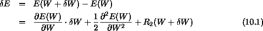
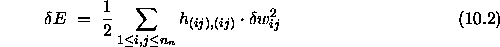
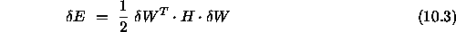
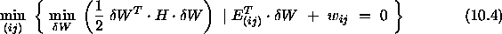
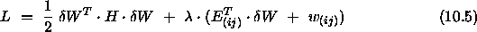

Optimal Brain Surgeon (OBS, see [BH93]) was a further development of OBD. It computes the full Hesse-Matrix iteratively, which leads to a more exact approximation of the error function:

From equation ( ), we form a minimization problem
with the additional condition, that at least one weight must be set to
zero:
), we form a minimization problem
with the additional condition, that at least one weight must be set to
zero:

and deduce a Lagrangian from that:

where

is an Lagrangian multiplier. This leads to
Note that the weights of all links are updated.
The problem is, that the inverse of the Hesse-Matrix has to be computed to deduce saliency and weight change for every link. A sophisticated algorithm has been developed, but it is still very slow and takes much memory, so that you will get in trouble for bigger problems.